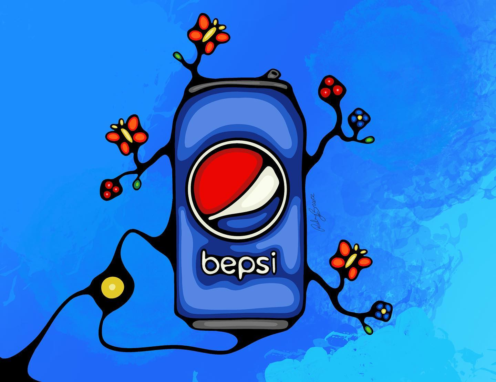
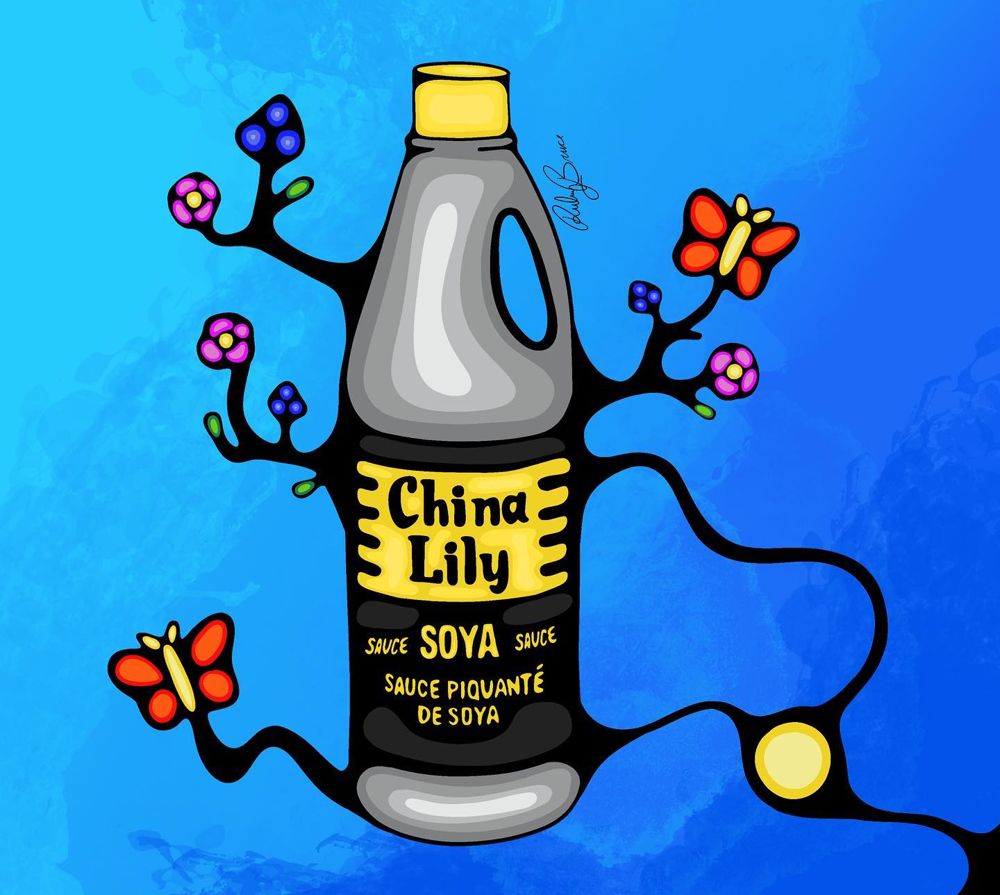

Drinks
Here's what drinks auntie has to offer:
- Bepsi
-
Coffee
- Hot
- Iced
- red rose
Food
Here's what food auntie has to offer:
- Bannock Taco
- Indian Ice Cream
Gallery
Here is a small gallery for Ruby Bruce's art.

Art created by: Ruby Bruce


This image is from: pixabay by ahmetyuksek